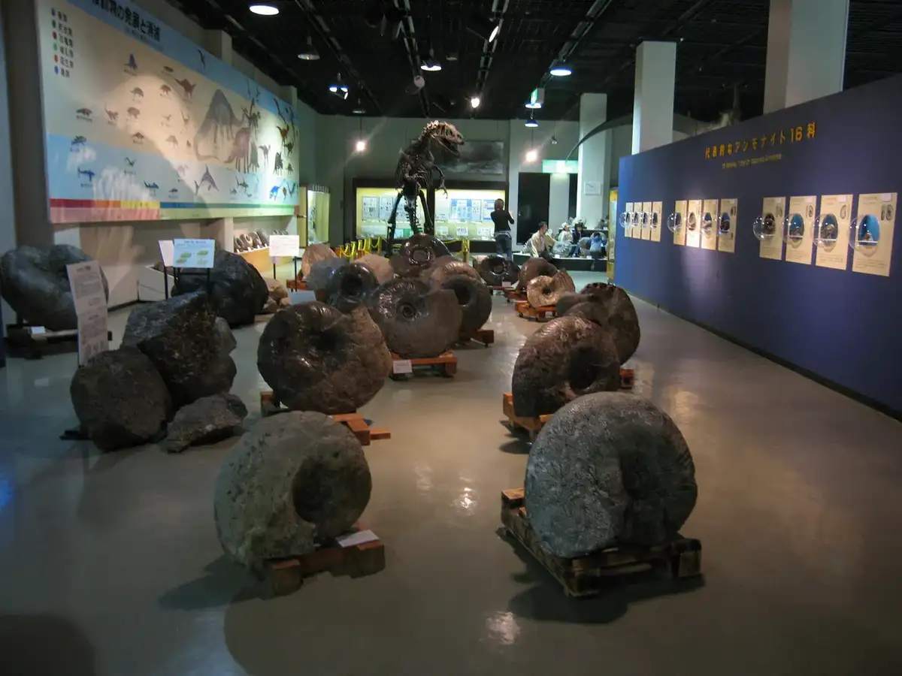
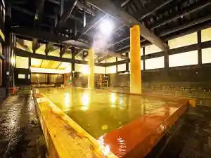
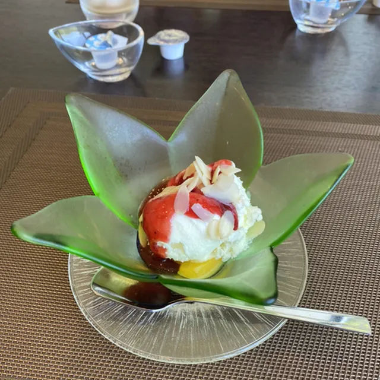
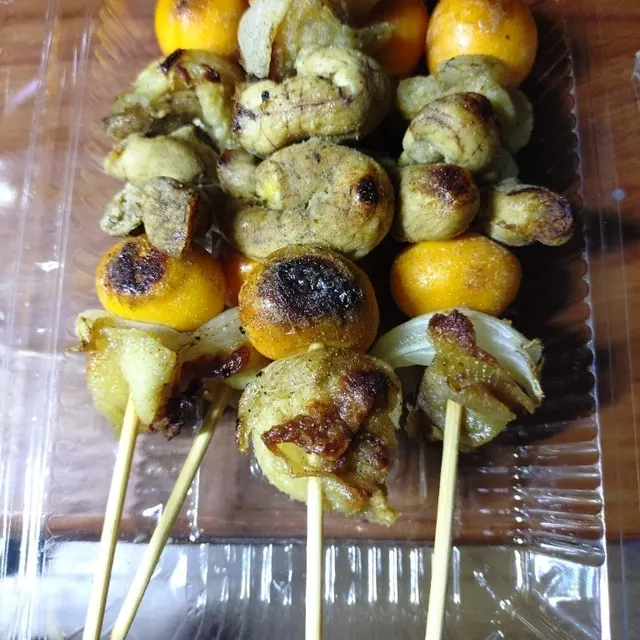
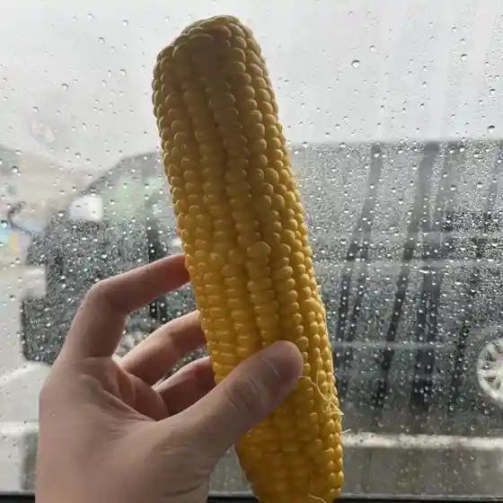
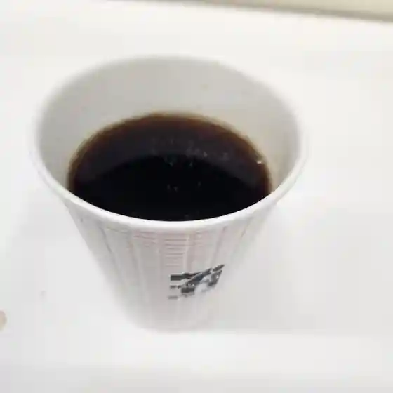
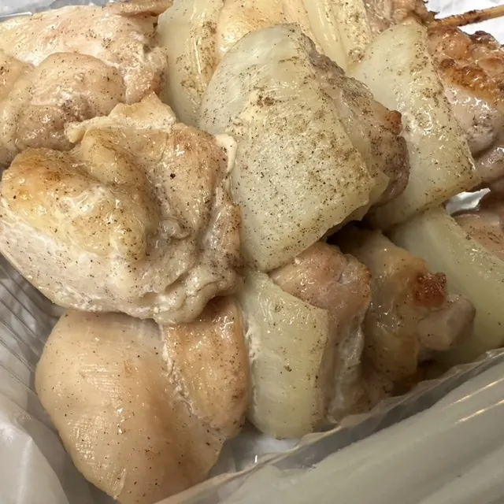
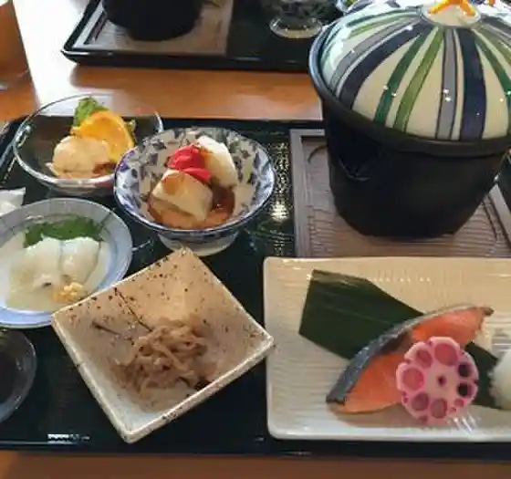
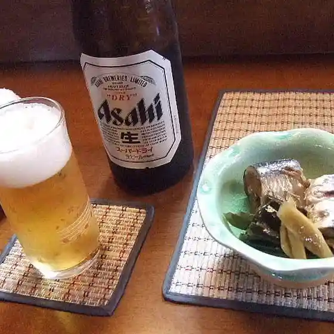

Mikasa
Mikasa · Hokkaido
Mikasa
Highlighted on the Hokkaido map.

Stay
三笠天然温泉 太古の湯スパリゾート HOTELTAIKO・別邸 旅籠

Mikasa Tennen Onsen Taiko No Yu Suparizooto Hoteltaiko Bettei Hatago
湯の元温泉旅館
Yu No Gen'On Izumi Ryokan
Dining
ジオヴィレッジ

Jiovirejji
民宿アンモナイト

Minshuku Anmonaito
MAMO

Mamo
農家の店

Nouka No Mise
セブンイレブン 三笠道の駅店

Sebun'Irebun Mikasa Michi No Eki Mise
三笠奔別やきとり 金次郎

Mikasa Hon Betsu Yakitori Kinjirou
ホテル タイコ

Hoteru Taiko
天元

Tengen
焼鳥亭ココット
Yakitori Tei Kokotto
セブンイレブン 三笠いちきしり店
Sebun'Irebun Mikasa Ichikishiri Mise
長栄堂稲葉菓子店
Chouei Dou Inaba Kashi Mise
すし心 輝
Sushi Kokoro Teru
アマイモノクラブ
Amaimonokurabu
湯の元温泉
Yu No Gen'On Izumi
IMO melon NANKIN
Imo Melon Nankin
伊藤果樹園
Itou Kajuen
あいすの杜
Aisuno Mori
まごころきっちん
Magokorokitchin
さとね
Satone
遊食処 樹
Yuu Shoku Tokoro Ki
中村鮮魚店
Nakamura Sengyoten
ツルハドラッグ 三笠店
Tsuruhadoraggu Mikasa Mise
緑月
Midori Gatsu
みのる青果
Minoru Seika